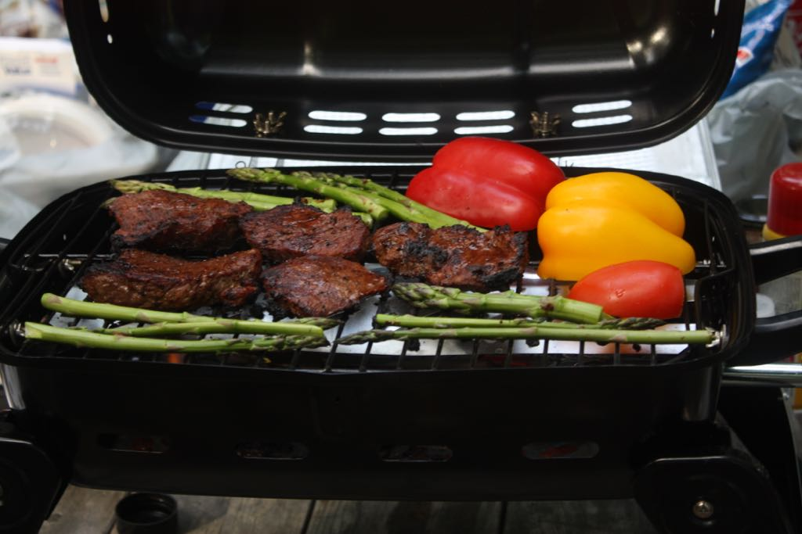
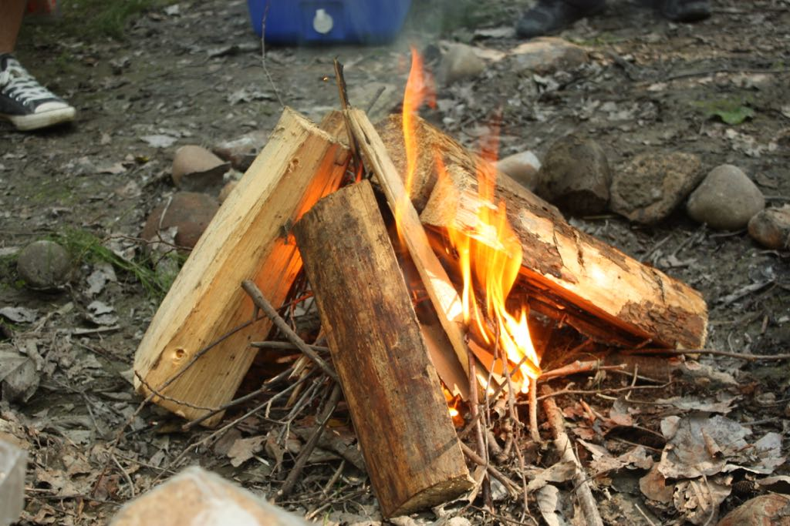
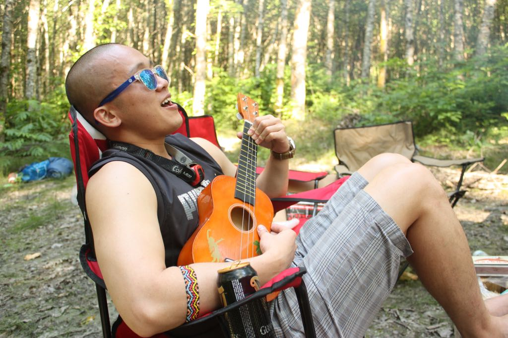
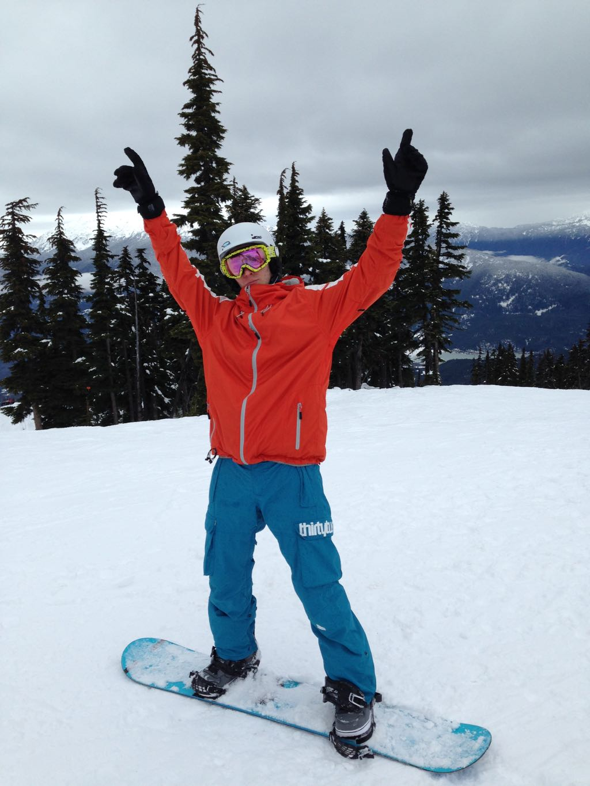
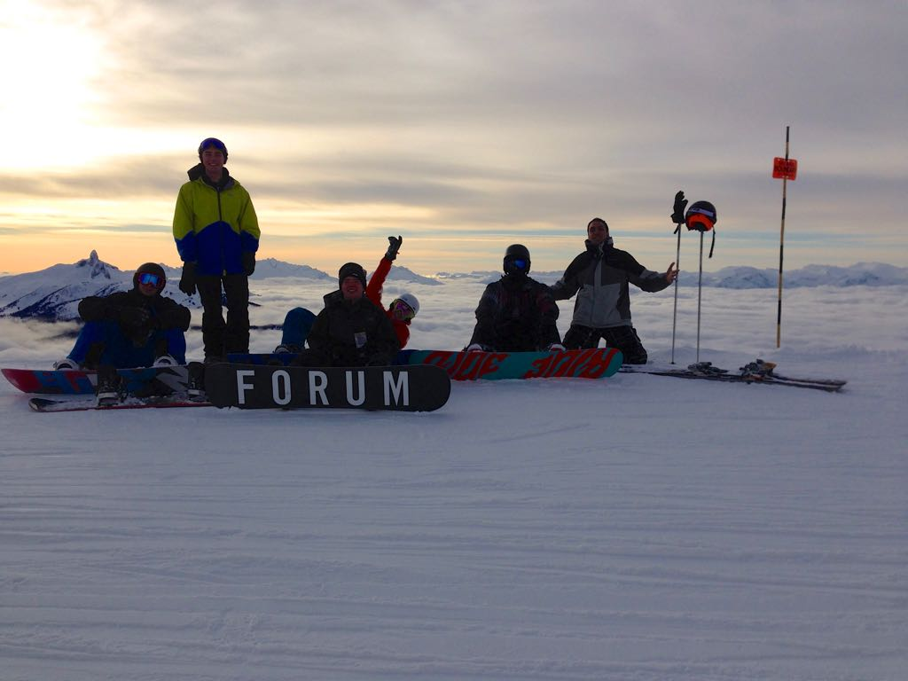
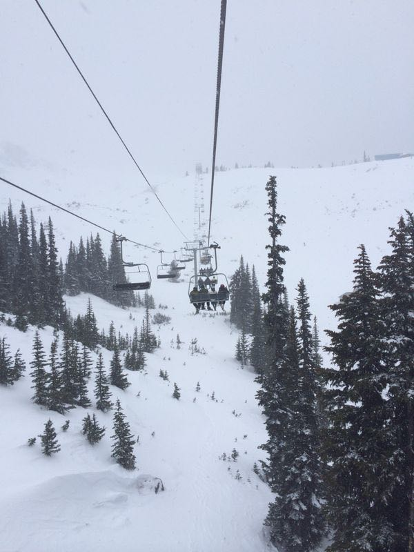
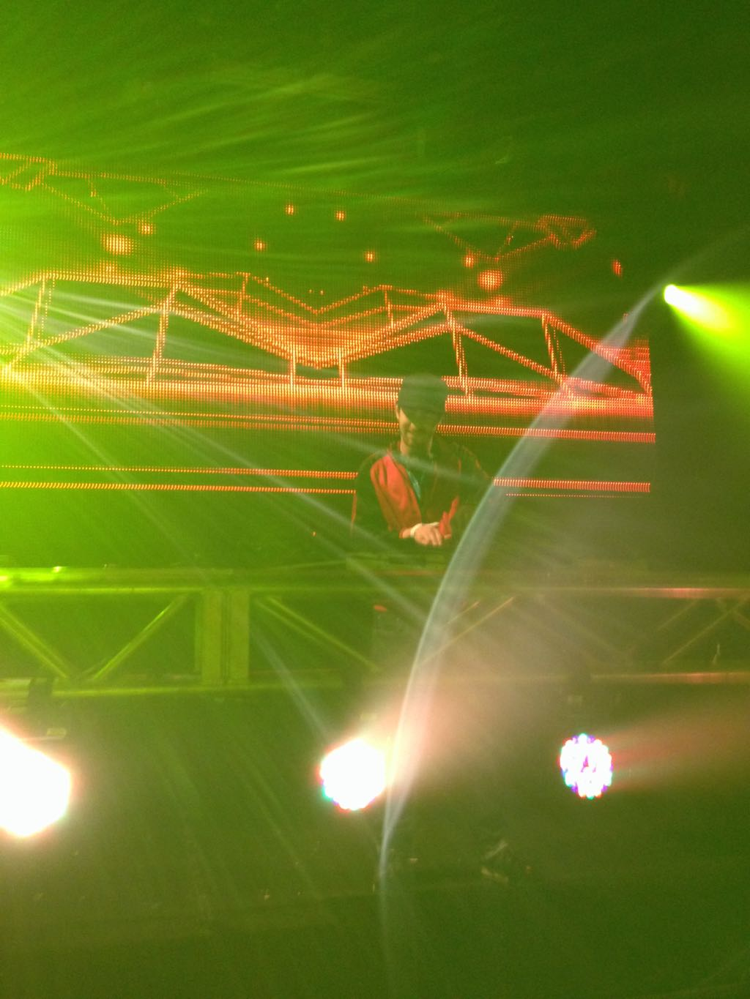
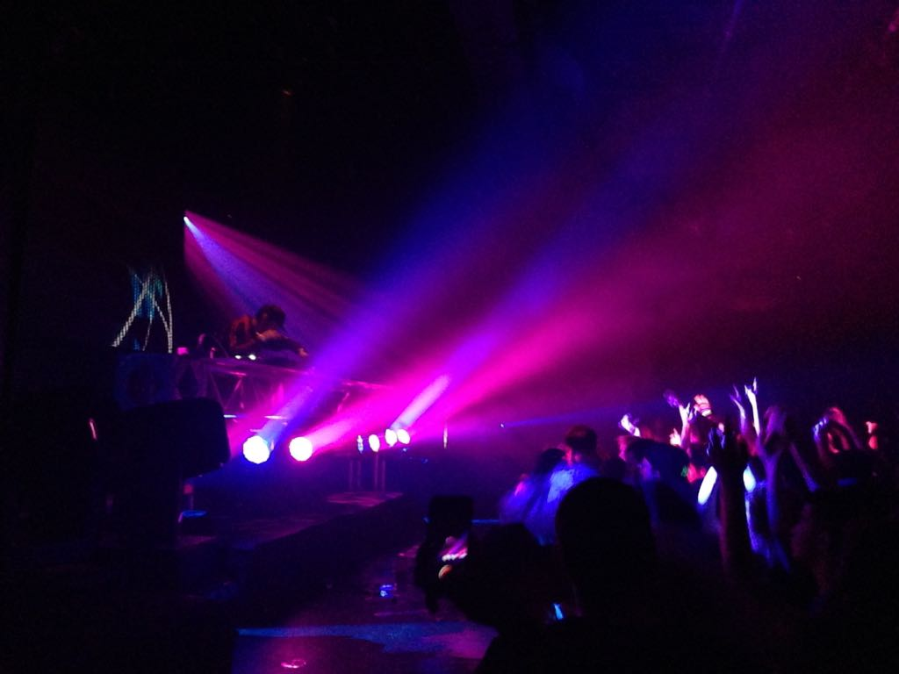
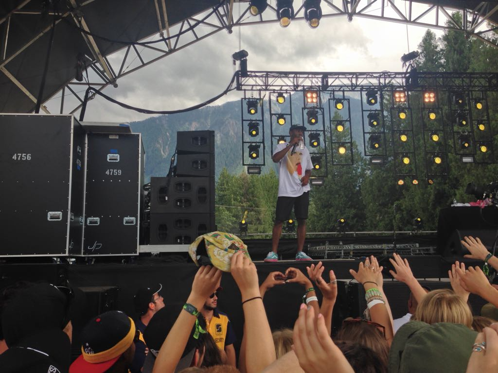

I enjoy camping during the summer, since it provides me with an opportunity to connect with nature, when it is the most pleasing season in Vancouver. Usually we would grab our tents, sleeping bags and a boat and go somewhere where we have never been before. Exploring new places while hiking or boating is an excellent time spent with your friends and it is also good for your health. During the night, we like to play musical instruments and sing together, or just cooking marshmallows on the fire and telling stories to each other.



Since I love spending my time on the nature, during the winter I like to snowboard, as my favorite way to connect with nature. It is such an amazing feeling, when you wake up at the morning fresh and ready to hit the slopes. During the last 4 years I have tried snowboarding on the different mountains in Vancouver and Whistler, and Blackcomb mountain was the best by far. I love snowboarding there, since the escalators are very fast and the mountain provides tracks for any levels of difficulty. Whistler also provides good deals for the students, so it is way cheaper for me to snowboard there, in comparison to the usual rate.
  
This one is my favorite, since I can do it almost anywhere, anytime. If you are taking a bus, studying, creating a website or doing anything else there can be nothing better than music to accompany you. I listen to a lot of different genres, but I prefer hip hop and electronic music the most. Reviewing new albums presented by rappers and electronic producers and selecting the best tracks to fit my playlists can take me hours to do, and I enjoy it all.
  
ReFilamer was a startup project, that me and my team created during Social Venture Accelerator course. It was a desktop recycling device that allowed 3D printer users to recycle their 3D printed waste back into reusable, high quality 3D printer filament. Traditional filament extruders, either industrial or consumer, were normally horizontal in orientation. Our device was vertical in orientation, in order to utilize gravity, which highly improved filament quality and reduced the base footprint.
The Mustache Project was about harnessing the untapped power of the mustache for good. We aimed to provide care-kits (shavers, shampoo, deodorant, etc) to support the Union Gospel Mission's Alcohol and Drug Recover Programs. The care-kits would be distributed to Union Gospel's East Side Vancouver operations. We hoped these care-kits would aid in the participants' long recovery in the program. Our plan of attack was to get sponsors to pledge their help. For every sponsor, we would collect mustache photos in their name.
Overall, the experience that we had with B2B marketing class and 100 Mile Catering venture were invaluable to me. It helped to realize the core differences of B2B marketing and B2C marketing, and destroy some of the assumptions that I had regarding this discipline. The practical side of working with a 100 Mile Catering ensured that we could use these concepts in the real time, and made our learning process way more interesting, but challenging. There were still a lot of issues to address and situations to learn from, but any experience, even negative, is valuable, as it would provide an opportunity for me to make the right decisions in the future.